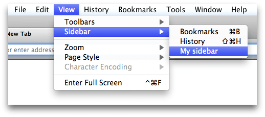
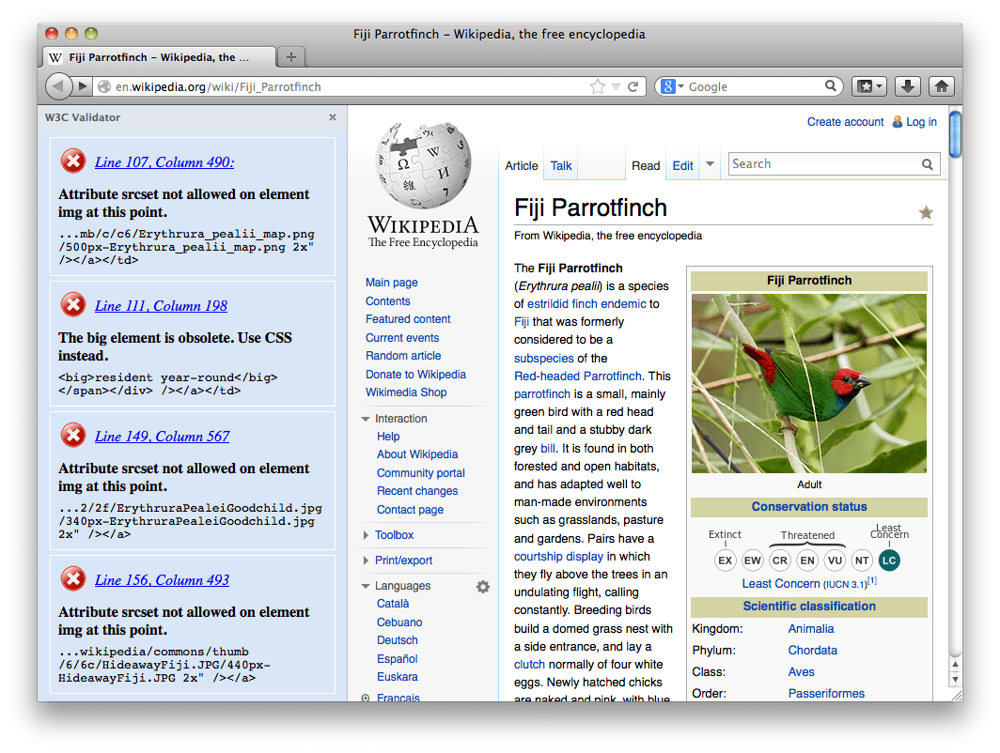

Experimental
Enables you to create sidebars. A sidebar is a vertical strip of user interface real estate for your add-on that's attached to the left-hand side of the browser window. You specify its content using HTML, CSS, and JavaScript, and the user can show or hide it in the same way they can show or hide the built-in sidebars.
Usage
Creating, showing, and hiding sidebars
You construct a Sidebar object using the Sidebar() constructor.
Once you've done that, you can show the sidebar by calling the Sidebar's show() method. If a new window is opened from a window that has a sidebar visible, the new window gets a sidebar, too.
You can hide the sidebar by calling its hide() method.
Called with no arguments, show() and hide() will operate on the currently active window. From Firefox 33 onwards you can pass a BrowserWindow into these methods, and they will then operate on the specified window.
Alternatively, the View->Sidebar submenu in Firefox will contain a new item which the user can use to show or hide the sidebar:
The sidebar generates a show event when it is shown and a hide event when it is hidden.
Once you've finished using the sidebar you can destroy it by calling its dispose() method.
To show what a sidebar looks like, here's a sidebar that displays the results of running the W3C Validator on the current page:

Specifying sidebar content
The content of a sidebar is specified using HTML, which is loaded from the URL supplied in the url option to the sidebar's constructor. Unlike modules such as panel, the content must be local, typically loaded from the add-on's data directory via a URL constructed using self.data.url():
var sidebar = require("sdk/ui/sidebar").Sidebar({
id: 'my-sidebar',
title: 'My sidebar',
url: require("sdk/self").data.url("sidebar.html")
});
From Firefox 34, you can use "./sidebar.html" as an alias for self.data.url("sidebar.html"). So you can rewrite the above code like this:
var sidebar = require("sdk/ui/sidebar").Sidebar({
id: 'my-sidebar',
title: 'My sidebar',
url: "./sidebar.html"
});
You can include JavaScript and CSS from the HTML as you would with any web page, for example using <script> and <link> tags containing a path relative to the HTML file itself.
<!DOCTYPE HTML>
<html>
<head>
<link href="stuff.css" type="text/css" rel="stylesheet">
</head>
<body>
<script type="text/javascript" src="stuff.js"></script>
</body>
</html>
You can update the sidebar's content by setting the sidebar's url property. This will change the sidebar's content across all windows.
Communicating with sidebar scripts
You can't directly access your sidebar's content from your main add-on code, but you can send messages between your main add-on code and scripts loaded into your sidebar.
On the sidebar end of the conversation, sidebar scripts get a global variable addon that contains a port for sending and receiving messages.
On the add-on side, you need to get a worker object for the sidebar before you can send or receive messages. There are two events emitted by the sidebar which will give you a worker: attach and ready. Listen to attach if the first message in your add-on goes from the sidebar scripts to the main add-on code, and listen to ready if the first message goes from the main add-on code to the sidebar script.
Using attach
The attach event is triggered whenever the DOM for a new sidebar instance is loaded and its scripts are attached. The sidebar script may not be initialized yet, so you can't reliably send messages to the sidebar script right away: however, you can start listening to messages from the script.
Here's a simple but complete add-on that shows how to set up communication between main.js and a script in a sidebar, in the case where the sidebar script initiates communication:
The HTML file includes just a script, "sidebar.js":
<!DOCTYPE HTML>
<html>
<body>
Content for my sidebar
<script type="text/javascript" src="sidebar.js"></script>
</body>
</html>
The "sidebar.js" file sends a ping message to main.js using port.emit() as soon as it loads, and adds a listener to the pong message.
addon.port.emit("ping");
addon.port.on("pong", function() {
console.log("sidebar script got the reply");
});
The "main.js" file creates a sidebar object and adds a listener to its attach event. On attach, "main.js" starts listening to the ping message, and responds with a pong:
var sidebar = require("sdk/ui/sidebar").Sidebar({
id: 'my-sidebar',
title: 'My sidebar',
url: require("sdk/self").data.url("sidebar.html"),
onAttach: function (worker) {
worker.port.on("ping", function() {
console.log("add-on script got the message");
worker.port.emit("pong");
});
}
});
Try running the add-on, and showing the sidebar using the "View->Sidebar->My sidebar" menu item. You should see console output like:
console.log: add-on: add-on script got the message console.log: add-on: sidebar script got the reply
Using ready
The ready event is emitted when the DOM for the sidebar's content is ready. It is equivalent to the DOMContentLoaded event. At this point the sidebar script is initialized, so you can send messages to the sidebar script and be confident that they will not be lost. Listen to this event if your add-on initiates the conversation.
Here's a simple but complete add-on that shows how to set up communication between main.js and a script in a sidebar, in the case where the main.js script initiates communication:
The HTML file includes just a script, "sidebar.js":
<!DOCTYPE HTML>
<html>
<body>
Content for my sidebar
<script type="text/javascript" src="sidebar.js"></script>
</body>
</html>
The "sidebar.js" file listens to the ping message from main.js, and responds with a pong message.
addon.port.on("ping", function() {
console.log("sidebar script got the message");
addon.port.emit("pong");
});
The "main.js" file creates a sidebar object and adds a listener to its attach event. On attach, "main.js" sends the ping message, and starts listening for the pong:
var sidebar = require("sdk/ui/sidebar").Sidebar({
id: 'my-sidebar',
title: 'My sidebar',
url: require("sdk/self").data.url("sidebar.html"),
onReady: function (worker) {
worker.port.emit("ping");
worker.port.on("pong", function() {
console.log("add-on script got the reply");
});
}
});
Try running the add-on, and showing the sidebar using the "View->Sidebar->My sidebar" menu item. You should see console output like:
console.log: add-on: sidebar script got the message console.log: add-on: add-on script got the reply
Globals
Constructors
Sidebar(options)
Creates a sidebar.
var sidebar = require("sdk/ui/sidebar").Sidebar({
id: 'my-sidebar',
title: 'My sidebar',
url: require("sdk/self").data.url("sidebar.html"),
onAttach: function (worker) {
console.log("attaching");
},
onShow: function () {
console.log("showing");
},
onHide: function () {
console.log("hiding");
},
onDetach: function () {
console.log("detaching");
}
});
Parameters
options : object
Required options:
| Name | Type | |
|---|---|---|
| title | string |
A title for the sidebar. This will be used for the label for your sidebar in the "Sidebar" submenu in Firefox, and will be shown at the top of your sidebar when it is open. |
| url | string |
The URL of the content to load in the sidebar. This must be a local URL (typically, loaded from the "data" folder using From Firefox 34, you can use |
Optional options:
| Name | Type | |
|---|---|---|
| id | string |
The This option was mandatory before Firefox 28. |
| onAttach | function |
Listener for the sidebar's |
| onDetach | function |
Listener for the sidebar's |
| onShow | function |
Listener for the sidebar's |
| onHide | function |
Listener for the sidebar's |
Sidebar
The Sidebar object. Once a sidebar has been created it can be shown and hidden in the active window using its show() and hide() methods. Once a sidebar is no longer needed it can be destroyed using dispose().
Methods
dispose()
Destroys the sidebar. Once destroyed, the sidebar can no longer be used.
show(window)
Displays the sidebar.
Parameters
window : BrowserWindow
The window in which to show the sidebar, specified as a BrowserWindow. This parameter is optional. If it is omitted, then the sidebar will be shown in the currently active window. This parameter is new in Firefox 33.
hide(window)
Hides the sidebar.
Parameters
window : BrowserWindow
The window for which to hide the sidebar, specified as a BrowserWindow. This parameter is optional. If it is omitted, then the sidebar will be hidden for the currently active window. This parameter is new in Firefox 33.
on(type, listener)
Registers an event listener with the sidebar.
Parameters
type : string
The type of event to listen for.
listener : function
The listener function that handles the event.
once(type, listener)
Registers an event listener with the sidebar. The difference between on and once is that on will continue listening until it is removed, whereas once is removed automatically upon the first event it catches.
Parameters
type : string
The type of event to listen for.
listener : function
The listener function that handles the event.
removeListener(type, listener)
Unregisters/removes an event listener from the sidebar.
Parameters
type : string
The type of event for which listener was registered.
listener : function
The listener function that was registered.
Properties
id
The id of the sidebar. This used to identify this sidebar in its chrome window. It must be unique.
title
The title of the sidebar. This will be used for the label for your sidebar in the "Sidebar" submenu in Firefox, and will be shown at the top of your sidebar when it is open.
url
The URL of the content to load in the sidebar. This must be a local URL (typically, loaded from the "data" folder using self.data.url()).
Events
attach
This event is emitted when a worker is attached to a sidebar, as a result of any of the following:
- calling the sidebar's
show()method, when the sidebar is not shown in the currently active window - changing the sidebar's
urlproperty - the user switching the sidebar on using the "Sidebar" submenu in Firefox, when the sidebar is not shown in the currently active window
- the user opening a new window from a window that has the sidebar showing
It is passed a worker as an argument, which defines port.emit() and port.on() methods that you can use to send messages to, and receive messages from, scripts loaded into the sidebar.
This is the event you should listen to if your main add-on code needs to communicate with the scripts loaded into the sidebar, and the sidebar scripts start the conversation.
See Using attach for an example.
ready
This event is emitted after the DOM content for a sidebar has been loaded, as a result of any of:
- calling the sidebar's
show()method, when the sidebar is not shown in the currently active window - changing the sidebar's
urlproperty - the user switching the sidebar on using the "Sidebar" submenu in Firefox, when the sidebar is not shown in the currently active window
- the user opening a new window from a window that has the sidebar showing
It is passed a worker as an argument, which defines port.emit() and port.on() methods that you can use to send messages to, and receive messages from, scripts loaded into the sidebar.
This is the event you should listen to if your main add-on code needs to communicate with the scripts loaded into the sidebar and the main add-on code starts the conversation.
See Using ready for an example.
detach
This event is emitted when a worker is detached from a sidebar, as a result of either of the following:
- calling the sidebar's
hide()method, when the sidebar is being shown in the currently active window - the user switching the sidebar off using the "Sidebar" submenu in Firefox, when the sidebar is being shown in the currently active window
The detach listener receives a worker object as a parameter. This object is the same as the worker passed into the corresponding attach event. After detach, this worker can no longer be used to communicate with the scripts in that sidebar instance, because it has been unloaded.
If you listen to attach, and in the listener take a reference to the worker object that's passed into it, so you can send it messages later on, then you should probably listen to detach, and in its handler, remove your reference to the worker.
Here's an add-on that adds each worker to an array in the attach handler, and makes sure that its references are cleaned up by listening to detach and removing workers as they are detached:
var workerArray = [];
function attachWorker(worker) {
workerArray.push(worker);
}
function detachWorker(worker) {
var index = workerArray.indexOf(worker);
if(index != -1) {
workerArray.splice(index, 1);
}
}
var sidebar = require("sdk/ui/sidebar").Sidebar({
id: 'my-sidebar',
title: 'My Sidebar',
url: require("sdk/self").data.url("sidebar.html"),
onAttach: attachWorker,
onDetach: detachWorker
});
show
This event is emitted when the sidebar is shown, as a result of any of the following:
- calling the sidebar's
show()method, when the sidebar is not shown in the currently active window - changing the sidebar's
urlproperty - the user switching the sidebar on using the "Sidebar" submenu in Firefox, when the sidebar is not shown in the currently active window
- the user opening a new window from a window that has the sidebar showing
hide
This event is emitted when the sidebar is hidden, as a result of either of the following:
- calling the sidebar's
hide()method, when the sidebar is being shown in the currently active window - the user switching the sidebar off using the "Sidebar" submenu in Firefox, when the sidebar is being shown in the currently active window